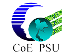
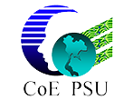

| Aree Teeraparbseree |
Prince of Songkla University |
Thailand |
| Komsan Kanjanasit |
Prince of Songkla University |
Thailand |
| Nikom Suvonvorn |
Prince of Songkla University |
Thailand |
| Pairin Kuaykaew |
ECTI Association |
Thailand |
| Petcharat Suriyachai |
Prince of Songkla University |
Thailand |
| Pichaya Tandayya |
Prince of Songkla University |
Thailand |
| Richard Hsin-Hsyong Yang |
National Kaohsiung First University of Science and Technology |
Taiwan |
| Sinchai Kamolphiwong |
Prince of Songkla University |
Thailand |
| Warodom Weerapan |
Prince of Songkla University, Phuket Campus |
Thailand |
| Wasimon Panichpattanakul |
Prince of Songkla University, Phuket Campus |
Thailand |
| Wiboon Promphanich |
King Mongkut’s Institute of Technology Ladkrabang |
Thailand |
| Keattisak Sripimanwat |
NECTEC |
Thailand |
| Jen-Shiun Chiang |
Tamkang University |
Taiwan |
| Akira Taguchi |
Tokyo City University |
Japan |
| Chih-Hsien Hsia |
Chinese Culture University |
Taiwan |
| Yoshio Itoh |
Tottori University |
Japan |
| Canhui Cai |
Huaqiao University, Xiamen |
China |
| Kai-Kuang Ma |
Nanyang Technological University |
Singapore |
| Kenji Nakayama |
Kanazawa University |
Japan |
| Miin-Jong Hao |
National Kaohsiung First University of Science and Technology |
Taiwan |
| Takayuki Nakachi |
NTT Corporation |
Japan |
| Lap Pui Chau |
Nanyang Technological University |
Singapore |
| Trio Adiono |
Institut Teknologi Bandung |
Indonesia |
| Somsak Choomchuay |
King Mongkut's Institute of Technology Ladkrabang |
Thailand |
| Raveendran Paramesran |
University of Malaya |
Malaysia |
| Shingo Yoshizawa |
Kitami Institute of Technology |
Japan |
| Inkyu Lee |
Korea University |
Korea |
| Tomonori Aoyama |
Keio University |
Japan |
| Shiunn-Jang Chern |
Tamkang University |
Taiwan |
| Masayuki Kawamata |
Tohoku University |
Japan |
| Shin-ichi Koike |
Consultant(ex- NEC) |
Japan |
| Byeong Gi Lee |
Seoul National University |
Korea |
| Lin-shan Lee |
National Taiwan University |
Taiwan |
| Naohisa Ohta |
Keio University |
Japan |
| Yoshikazu Miyanaga |
Hokkaido University |
Japan |
King N. Ngan
|
The Chinese University of Hong Kong |
Hong Kong |
| Takao Onoye |
Osaka University |
Japan |
| Kosin Chamnongthai |
King Mongkut's University of Technology Thonburi |
Thailand |
| Fumitoshi Matsuno |
Kyoto University |
Japan |
| Karn Opasjumruskit |
Silicon Craft Technology Co., Ltd. |
Thailand |
| Kazumasa Kobayashi |
Kurashiki University of Science and the Arts |
Japan |
| Terence Sim |
National University of Singapore |
Singapore |
| Adya Pramudita |
Atma Jaya Catholic University |
Indonesia |
| Akira Suganuma |
National Institute of Technology, Ariake College |
Japan |
| Alia Asheralieva |
Hokkaido University |
Japan |
| Amy Hamidah Salman |
Institut Teknologi Bandung |
Indonesia |
| Anchalee Manosueb |
King Mongkut's Institute of Technology Ladkrabang |
Thailand |
| Aritra Dasgupta |
National Institute of Technology, Durgapur |
India |
| Artit Visavakitcharoen |
Tokyo Metropolitan University |
Japan |
| Atsushi Kinjo |
National Institute of Technology, Okinawa College |
Japan |
| Banphot Nobaew |
Mae Fah Luang
University |
Thailand |
| Beatrice Paillassa |
INP – ENSEEIHT |
France |
| Chanjira Sinthanayothin |
NECTEC |
Thailand |
| Chi-Chia Sun |
National Formosa University |
Taiwan |
| Chunhui Pan |
Tokyo City University |
Japan |
| Dinesh Kumar |
USICT, GGSIPU |
India |
| Haidong Sun |
Saitama Institute of Technology |
Japan |
| Hao San |
Tokyo City University |
Japan |
| Haruna Aimi |
Tokyo Denki University |
Japan |
| Hidemitsu Kiyuna |
University of the Ryukyus |
Japan |
| Hirokazu Yoshizawa |
Saitama Institute of Technology |
Japan |
| Hiroki Matsumoto |
Maebashi Institute of Technology |
Japan |
| Hiroshi Tsutsui |
Hokkaido University |
Japan |
| Hitoshi Kiya |
Tokyo Metropolitan University |
Japan |
| In-Gul Jang |
ETRI |
Korea |
| Jia-Chyi Wu |
National Taiwan Ocean University |
Taiwan |
| Jirabhorn Chaiwongsai |
School of Information and Communication Technology, University of Phayao |
Thailand |
| Jocelyn Benoit |
Ecole NAD |
Canada |
| Kantip Kiratiratanapruk |
NECTEC |
Thailand |
| Kashyap Patel |
IIT Gandhinagar |
India |
| Kazuaki Matsushima |
Maebashi Institute of Technology |
Japan |
| Kazuki Aono |
Tottori University |
Japan |
| Keiichi Uchimura |
Kumamoto University |
Japan |
| Kenji Suyama |
Tokyo Denki University |
Japan |
| Kenta Omiya |
Tokyo Denki University |
Japan |
| Khairunisa Ahmad Denney |
Kyushu Institute of Technology |
Japan |
| Khin Yadanar Win |
King Mongkut's Institute of Technology Ladkrabang (KMITL) |
Thailand |
| Kohei Inoue |
Kyushu University |
Japan |
| Kohei Takamatsu |
University of Fukui |
Japan |
| Koichi Murakami |
NTT Communications Corporation |
Japan |
| Koken Chin |
Tokyo City University |
Japan |
| Kousuke Imamura |
Kanazawa University |
Japan |
| Krishna Battula |
University College of Engineering Vizianagaram, JNTUK,
Vizianagaram |
India |
| Kyohei Mitani |
Saitama University |
Japan |
| Masahiro Kubo |
Keio University |
Japan |
| Masashi Mishima |
National Institute of Technology, Ariake College |
Japan |
| Masayuki Kurosaki |
Kyushu Institute of Technology |
Japan |
| Meng Meng |
Nagoya City University |
Japan |
| Mitsuji Muneyasu |
Kansai University |
Japan |
| Montree Kumngern |
King Mongkut’s Institute of Technology Ladkrabang |
Thailand |
| Munish Kumar |
USICT, GGSIPU |
India |
| Nicodimus Retdian |
Shibaura Institute of Technology |
Japan |
| Nipont Tangthong |
Rajamangala University of Technology Krungthep |
Thailand |
| Nobuhiko Nakano |
Keio University |
Japan |
| Nonlapas Wongwaen |
NECTEC |
Thailand |
| Parin Sornlertlamvanich |
Prince of Songkla University |
Thailand |
| Phichet Moungnoul |
King Mongkut’s Institute of Technology Ladkrabang |
Thailand |
| Philippe Gournay |
Universite de Sherbrooke |
Canada |
| Piyawit Tantisarkhornkhet |
Prince of Songkla University |
Thailand |
| Prasit Nangtin |
King Mongkut's University of Technology Thonburi |
Thailand |
| Preetisudha Meher |
NIT, Rourkela |
India |
| Prusayon Nintanavongsa |
Rajamangala University of Technology Thanyaburi |
Thailand |
| Rie Saotome |
University of the Ryukyus |
Japan |
| Salih Ergun |
TUBITAK BILGEM - Informatics and Information Security Research Center |
Turkey |
| Sanchai Jaktheerangkoon |
Chulalongkorn University |
Thailand |
| Sarun Duangsuwan |
King Mongkut's Institute of Technology Ladkrabang Prince of
Chomphon Campus |
Thailand |
| Sasa Maric |
Macquarie University |
Australia |
| Seiichiro Moro |
University of Fukui |
Japan |
| Seijiro Imai |
Hokkaido University |
Japan |
| Shin'Ichi Koike |
Consultant |
Japan |
| Shin'ichi Tachikawa |
National Institute of Technology, Nagaoka College |
Japan |
| Shota Matsuo |
National Defense Academy of Japan |
Japan |
| Shun Asawa |
Saitama University |
Japan |
| Srisupang Thewsuwan |
Kyushu Institute of Technology |
Japan |
| Suchada Tantisatirapong |
Srinakharinwirot University |
Thailand |
| Sunyoung Han |
Konkuk University |
Korea |
| Taisaku Suzuki |
National Institute of Technology, Okinawa College |
Japan |
| Takahide Sato |
University of Yamanashi |
Japan |
| Takahiro Yano |
National Institute of Technology, Kurume College |
Japan |
| Takeshi Ohbuchi |
National Defense Academy of Japan |
Japan |
| Tatsumi Uwai |
Kyushu Institute of Technology |
Japan |
| Teerasak Chotikawanid |
King's Mongkut University of Technology Thonburi |
Thailand |
| Tetsuya Matsumura |
Nihon University |
Japan |
| Theerayod Wiangtong |
Mahanakorn University of Technology |
Thailand |
| Thitinan Kliangsuwan |
Prince of Songkla University |
Thailand |
| Tomochika Harada |
Yamagata University |
Japan |
| Tomohiro Sasahara |
Tokyo Denki University |
Japan |
| Tomohisa Wada |
University of the Ryukyus |
Japan |
| Tsugumichi Shibata |
Tokyo City University |
Japan |
| Tsuyoshi Makioka |
Kumamoto University |
Japan |
| Tushar Supe |
Georgia Institute of Technology |
United States |
| Wittaya Koodtalang |
King Mongkut's University of Technology North Bangkok |
Thailand |
| Xin Jin |
Tsinghua University |
China |
| Yeoh Tze Wei |
Shinshu University |
Japan |
| Yoschanin Sasiwat |
Prince of Songkla University |
Thailand |
| Yoshimasa Minami |
Keio University |
Japan |
| Yoshimitsu Kuroki |
National Institute of Technology, Kurume College |
Japan |
| Yoshio Matsuda |
Kanazawa University |
Japan |
| Yosuke Sugiura |
Saitama University |
Japan |
| Yuma Kinoshita |
Tokyo Metropolitan University |
Japan |
| Zi Hao Ong |
University of Yamanashi |
Japan |
 
